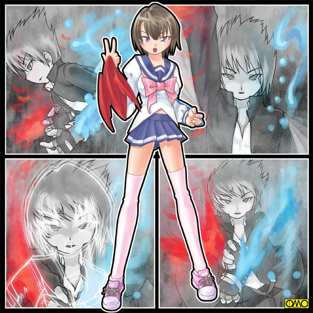

夕闇。それは魔の潜む時間。
（我らの復活に呼応すべくセーラまでもが蘇えりおったわ）
（これで戦乙女が三人全て蘇えったか）
（だが解せぬ。いくら長い年月が経ったといえど奴らの変わり方…そもそもなぜ転生は全て男なのだ？）
（うむ。我らが魂だけとは言えど女のままと言うのに、封印したきゃつらが変るとは？）
（ふふ。これに関してはわれ等に分がある。何しろ奴ら、古の戦いでは……）
悪しき魂たちが精神で会話していた。
「ふぃーっ。すっかり遅くなっちまったぜ」
男子生徒の一人。高森が慌てて学校を出て行く。既に日も暮れている。
「まったく。対立する連中の板ばさみ状態で苦労させられるぜ」
生徒会役員だった。しかし任期満了間際に起きた会長と副会長の対立。そして派閥割れ。
高森は両方に取り入って分のあるほうについていた。
そのため会議に付き合いここまで遅くなった。
その背後から「闇」の魂が迫る。一匹のコウモリ。
少年の首筋に噛み付く。硬直する高森。血の気がどんどん引いていく。
そして首からコウモリが溶けて少年の体に。力なく項垂れる高森。
やがて高森は顔を上げる。
小ずるそうな表情だったのが、邪悪な印象へと変貌していた。
戦乙女セーラ
ＥＰＩＳＯＤＥ３「妖精」
あのスパイダーアマッドネスとの闘いから三日。
「高岩君。いますか？」
一人の少女が高岩清良を訪ねた。
髪の長い華奢な美少女。赤いメガネが知的であり、可愛らしくもある。
胸は薄い。腕も細い。そしてまるで鶴の様に脚も細い。白い肌が輝いて見える。
うっすらと微笑んでいる。まるで邪気のない聖女のような笑み。
「俺ならここだが……」
怪訝な表情をする清良。
（誰だっけ？ でもどこかで見た覚えが……）
それを知ってか知らずか少女は満面の笑みを浮かべる。
「お話があるので良かったら屋上に来ませんか？」
「ア…ああ…いいぜ…」
戸惑いつつも断る理由はない。
「むーっっっっっ」
何故か不機嫌そのものの友紀。その彼女から逃げるように出て行った。
同行しつつも清良は軽く緊張していた。
見知らぬ美少女の呼び出し。そして…考えられうるアマッドネスの襲撃。
この少女が新たなる敵でないという保証はない。
二人は屋上の真ん中に来た。
周囲のどこにも隠れる場所が無い。聞き耳を立てられないという理由。
「んーっ。風が気持ちいいね」
少女は爽やかな笑みを浮かべる。まるで子供のようだ。
だが清良にしてみてはまだ警戒を解ける状態ではない。
「あたしはここで生まれ変わったんだなぁ」
生まれ変わる？ ある意味自分もここで女の姿を得たが…。
「……誰だ？」
たまらず清良は尋ねる。少女は悪戯っぽい表情に。
「あたしのこと。わかんない？」
清良は素直に首を縦に振る。少女も納得したように頷く。
「そうよねぇ。まるで違ったちゃったからねぇ。僕も」
「僕？」
使う女性もいるが清良はあまり女性が自分を「僕」と呼称するのは聞いたことがない。
「もう。君はあたしのヌードを見ているはずだよ」
「ぬ…ヌードぉ？」
この発言には面食らった。自慢じゃないが硬派のつもり。そんなナンパなまねなどしない。
「あたしよあたし。安楽知由よ」
「え？」
しばらく思考が麻痺していたがやっと結びついた。
「えーッッッッ？」
「もう。そんなに驚かなくてもいいじゃない」
ぷうと頬を膨らませる。
「お前…そう言えば男には戻れなかったが…」
途端に今度は罪悪感に見舞われる。ある意味、安楽を女性に固定したのは自分なのだ。
「あはは。やっぱり罪の意識持っているね。それを解きに来たのよ」
「解きにって？」
清良は混乱している。いくらなんでも吹っ切れすぎじゃないのか？
「高岩君の立場から行けば正当防衛だもん。仕方ないよ。あたしも死ななかったし。あのままだったら罪のない人たちまで手にかけていただろうし。罪を重ねる前に止めてくれてありがとう」
「いや…そんな…」
「不思議なほど女になったことは嫌じゃないのよね。死なずにはすんだし。それに自分の心の弱さ。醜さがあんな化け物に付け込まれたのだし。自業自得ね」
清良にはそれが強がりに見えた。
「さすがになっちゃった直後は悲しかったけどもう吹っ切れた。考えてみれば男じゃなくなったことでいくつか楽になったこともあるし」
これは想像できる。男なのに体が小さい。力がない。それらがコンプレックスになっていたと。
しかし女の身であればそれらはさほど問題ではない。体格の小ささはむしろ愛らしさになる。
「それでね。高岩君。あたしの経験からだけど…あの化け物。あたしの場合はいじめられていた心に付け込んできたわ。もしかするとそういう気持ちを持つものに取り付くのかもしれない」
「心の弱さということか」
清良は真顔になる。そういう手がかりがあれば多少は事前に防ぐことが可能かもしれない。
「なにかの参考になるかもしれないと思って。あたしを解放してくれたお礼。じゃあね」
屋上から去ろうとして思い出した。
「そうそう。あたしの新しい名前は安楽千由美（ちゆみ）です。前の名前の知由（ともよし）は「ちゆ」なんてからかわれていたから逆そこから取りました。可愛いでしょ？」
まるっきり女の子そのものである。今度こそ知由改め千由美は立ち去った。
「……おい。キャロル。見ていたか？」
使い魔を呼び出す。
「はい。見てました。セーラ様」
どこにいたのか使い魔の黒猫。キャロルが現れる。
「大体はわかったが…なんだあの吹っ切れ方は？ 説明できるか」
「これはブレイザ様。ジャンス様に倒されたアマッドネスたちも同様でした。千由美さんの語るとおりアマッドネスは人間の負の心に取り付き、そしてそれを元に体を作り変えます。しかしセーラ様がそれを倒して浄化したため千由美さん…この場合は知由さんのというべきですか。そのネガティブな感情も一時的ですが消え去りました。そのためか肉体が女性に変えられたことも前向きにとらえる傾向がありました」
「それでああまで見事に女になっていたのか」
「まぁ怪人体の時点で既に心も女でしたし」
「そういえば俺のほうも時間が経つに連れて女の姿が恥ずかしくなくなっていったんだが…」
ギクッとばかりに硬直する黒猫。
「最初は闘いに夢中だからかと思ったが…それこそ先に覚醒した奴らにも何かないのか？」
「それはまたいつか……」
人間なら冷や汗をたらしそうな表情。半信半疑だったが話す気がないらしいと判断して話題を切り替える。
「まぁいい。それより手がかりにはなりそうだな。もっともネガティブな感情を持たない奴なんているわけないが…あれ。それだと」
「そうですね。千由美さんはもう取り付かれることはないと思われます。もちろん生きていくうちにまたネガティブな感情も蓄積されていきますが、女性化したことでいくつかのコンプレックスが解消されたようですし、取り付かれるほど強大にはならないでしょう。何よりもスパイダーアマッドネスが取り付いたということは、他のアマッドネスとの相性はそんなによくないと思われますし」
「あいつはもう心配ないということか…それなら良かったよ」
このときの清良は男の姿でありながら女性のような優しい表情だった。
夜。清良の通う高校。
その生徒会室では未だに生徒会役員が残っていた。いわゆる会長派である。その中に高森の姿もあった。
「もうじき任期満了だが…それでも副会長の案を通して『負の遺産』とするわけにはいかない」
意見というより個人的に対立している様子が窺える。
細身の肉体は神経質な印象を与えていたがそれは事実であった。
七三わけもいかにもエリートな印象。
「そうだ。奴らの横暴を許すな」
意気が上がるその場の面々。高森だけは乗れていないが「芝居」で合わせている。
「それで……副会長のほうはどんな感じなんだい。高森君」
見透かしたような会長の視線。
「は？ なんで俺がそんなことを」
すっとぼけるが内心では冷や汗物。
「とぼけなくていいんだよ。君があちらとこちらを行き来しているというのはわかっているんだ。そう。例えるなら童話で動物と鳥の間を行き来したコウモリのようにね」
いきなり両脇から腕を掴まれる高森。
「な…何のマネです？」
それには平手で答える会長。
「とぼけるなと言った筈だが？ 薄汚いスパイ野郎が」
厳密には誰かに情報を流しているわけではないのでこれは不正解。ただの罵りである。
「調子のいいまねしやがって」
「制裁が必要だな」
リンチに発展しかかる。しかし
「制裁？ 笑わせるな」
声が変わった。女のような声に。
そして高森の肉体も目に見えて変化する。
どんどんと細くなる。狭くなる肩幅。腹部。脚。
腕だけは太くなる。皮膜が生成されコウモリのツバサに。
顔もコウモリのそれに。さらに言うなら女性的な印象に。
それは大きくせり出した胸部が強く印象付けていた。
「ば…化け物」
パニックに陥る生徒会メンバー。我先に扉へと急ぐが、取り押さえていた生徒を怪力で振りほどいた『高森だった化け物』は、今度は身軽に飛んで出口を塞ぐ。扉に手をかけていた生徒会長の首を掴む。
「生徒会長さんが真っ先に逃げ出すとは感心しないなぁ。制裁が必要だな」
「た…助けて…」
それに耳を貸さないコウモリの化け物は会長の首筋に牙を立てた。
「はぁぁぁっ」
まるで吸血鬼そのもの。やがて血を吸われて倒れふす。
「けっ。不味い血だ。次はどいつだ？ 人を小物扱いしやがって。あたしがお前らを支配してやるよ」
惨劇が続く。
清良は学校へと走っていた。普通にくつろいでいたらまたあの「嫌な感じ」がしたのだ。
「セーラ様。これは？」
いつの間にか併走していた黒猫が尋ねる。
「ああ。また出たようだ。くそっ。ふざけやがって」
そして彼はしゃにむに走る。
学校はまだ生徒会メンバーが残っているため校門が開いていた。
だから苦もなく走り抜ける清良。
「セーラ様。敵は恐らく既に変化しています。こちらも戦闘態勢に」
「そうだな。それに安楽のときは目の前で変身して後で苦労したしな」
敵前での変身を避けるため先に姿を変えることにした。
夜のため無人の廊下で一度立ち止まる。戦う意識を高めたことで両腕のブレスレットが手甲に変化。
そして右手を天に、左手を地にかざしてそれを水平に。
両脇にひきつけ前方へと突き出してクロス。
「変身」
スパークしたと思うとセーラー服姿の小柄な少女へと変貌していた。
戦乙女セーラ。エンジェルフォームと呼ばれるその姿に。

このイラストはＯＭＣによって作成されました。
クリエイターのていくあうとさんに感謝！
「セーラ様。そのポーズは？」
「るっさいな。この前蜘蛛やろうと戦った時に偶然このポーズで変身したんだよ。スイッチみたいなもんだ。それにこういう『儀式』をするようにしとけば、街のチンピラに絡まれて闘志をあげすぎて女になったりしないですむだろ」
「そうですね。緊急事態でポーズ取れないケースもありそうですが、そういう時は念じるだけで充分に変身できそうですしね」
「さぁ。急ぐぞ。気配は生徒会室からしている」
セーラー服の少女は迷うことなく生徒会室へと駆けつける。
そして見たのは一面に転がる生徒会役員の面々。
「貴様……」
理不尽な暴力に対しての怒りがこみ上げる。
勢力拡大を狙いとしているアマッドネス故に死んではいないと思われる。
だがスパイダーアマッドネスにやられたもの達がそうだったように…
「お前はセーラ？！ 先に実体化したはずのタランの姿がないと思ったら、お前に倒されていたのか？」
「ふん。さしづめお前はバットアマッドネスというところか？ どうやら遠慮はいらねぇな。安楽の様に同情できる部分はないようだ」
「ギギ。私はノロマなタランのようには行かんぞ。やれ」
横たわっていたもの達が号令で起き上がる。
血を吸われたところから見ていたら「ゾンビ」のイメージだろう。
くしくも男だけいたはずのこの日の会合。学校の男女比が元々男子校だったこともあり、かなり男子よりなのでこうなった。
ところがセーラに迫り来るものたちがどんどんと女へと姿を変える。
「くそっ。こいつらもか。安楽の様に完全に吹っ切れるならともかく、この先ずっと男の心と女の肉体で苦しむ羽目に」
こちらでは同情してしまう。変身した少女の肉体が精神にも影響していたセーラ。
狭い室内でもみくちゃにされる。
「ぎぎーっ」
そこをひらひらと頭上から攻撃を仕掛けてくるバットアマッドネス。
「ちっくしょう。おい。キャロル。キャストオフしてもこいつらは大丈夫か？」
現在の姿から攻撃力に特化した姿になることができる。
その際に現在のセーラー服が散り散りに飛散する。
「加減すれば威力は調整できます。この場合パンチ一発程度に抑えるつもりで」
「よーし。邪魔だからな」
セーラは乱戦の中で両腕を突き出す。再び手甲をあわせる。
「キャストオフ」
飛散したセーラー服の「破片」が雑兵と化した元生徒会役員たちに当たる。
散弾銃に例えるとわかりやすいか。
中には「打ち所が悪くて」気絶したものもいる。
体操服姿のセーラ・ヴァルキリアフォーム。攻撃力に特化。そしてエンジェルフォームと比べて格段に運動性能がいい。
それでも状況は変わらない。
狭い室内。まとわりつく雑兵。そして変則的なバットアマッドネスの攻撃。
巧にかわすが攻撃できないセーラ。
（くそっ。外に出るか？ いや。ここなら奴も高く飛べない。狭さは何もこちらの不利とは限らない。しかし…もっと素早く動けたら…）
その思いが出たら右手の手甲。ブレイズガントレットが赤く光る。そして何かをアピールするように熱を帯びる。
「ア…熱い」
思わず左手で右のガントレットを抑えてしまうセーラ。
その刹那である。体操着が輝いたかと思うとまた散り散りになる。
「うわあっ」
いきなり一糸まとわぬ姿になり驚くセーラ。半ば本能的に左手で胸元。右手で股間を隠す。
（あ…柔らかい…本当に女なんだな…俺）
Ｃカップはある胸の感触に場違いなことを考えてしまう。
散り散りになった体操着が再び体に。恐ろしく薄い素材。それも光沢のあるピンク。
若干薄めではあるが女性のシンボルの膨らんだ胸。細い腰。安産型のヒップというラインをもろに強調する。
短めだった髪は女性的にセミロングに。
「な…なんだ？ 何が起きたんだ？ もう体操着にまでなってたのにさらに変身？」
セーラ自身が混乱していた。
「セーラ様。それは恐らく妖精の型。現代風に言うならフェアリーフォームとでもいいましょうか。それならヴァルキリアフォーム以上に素早く動けます」
すかさず黒猫の解説が入る。
「素早くって…この姿…レオタードぉ？」
そう。変身を超える変身。超変身した姿。フェアリーフォームは俊敏性に特化していた。
そして根底にあったイメージで動きやすそうな「新体操」のスタイルに…
恥らっていたり戸惑っていられない。
レオタード姿のセーラは闘いを終わらせるべく、バットアマッドネスに向かって行った。